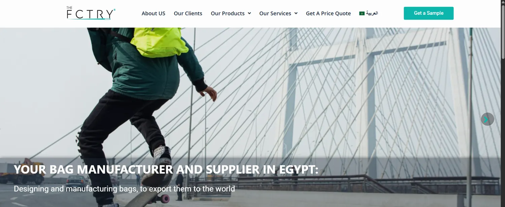

The FCTRY: B2B organic growth for an Egyptian bag manufacturer
Building a B2B organic presence for a local manufacturer facing entrenched domestic and Chinese competitors.

- 2.14KClicks7.2× the previous six months (297)
- 49.1KImpressions6.5× the previous six months (7.59K)
- 4.4%Click-through rateprevious six months: 3.9%
- 6.84KImpressions in Google AI featuresSearch Console, six months
Challenge
Wholesale bag manufacturing is crowded with low-cost Chinese imports and established local factories. The job was to break through the noise, capture commercial business-to-business intent, and position a local manufacturer as the first choice for bulk orders.
Approach
I designed a B2B marketing strategy built around long-tail manufacturing keywords, wholesale queries and custom-production searches, so the site meets buyers at the moment they look for a factory. I also worked on GEO and AEO so the brand appears in AI answers.
Results
Search Console shows 2.14K clicks in the last six months, up from 297 in the six months before, and 49.1K impressions, up from 7.59K. Click-through rate is 4.4% at an average position of 7.3. ChatGPT names The FCTRY when asked for the best bag manufacturer in Egypt and for private-label bag manufacturers, and Google’s AI Overview lists it for bag-manufacturer searches. In Microsoft Clarity, 7.1% of sessions include a click on Contact us.
Search performance
Search Console, last 6 months compared with the previous 6 months. Search Console, generative AI features: 6.84K impressions in six months.
Recommended by AI
ChatGPT: “what is the best bag manufacturer in egypt?” ChatGPT: private label bag manufacturer in Egypt. ChatGPT: “Best bag manufacture in egypt”. Google AI Overview: “bags manufacturer”.
Behaviour and traffic
Google Analytics 4: 4.7K active users, growing through 2026. Microsoft Clarity: 4,732 sessions in 240 days. Clarity referrers include Google, ChatGPT and Gemini. Clarity smart events: 15.68% outbound clicks, 7.14% Contact us.